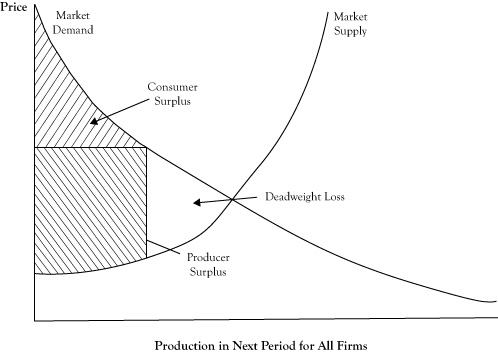
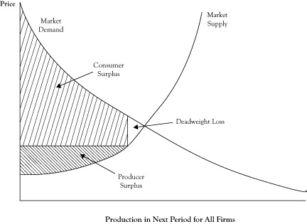

In a simple market under perfect competition, equilibrium occurs at a quantity and price where the marginal cost of attracting one more unit from one supplier is equal to the highest price that will attract the purchase of one more unit from a buyer. At the price charged at equilibrium, some buyers are getting a bargain of sorts because they would have been willing to purchase at least some units even if the price had been somewhat higher. The fact that market demand curves are downward sloping rather than perfectly flat reflects willingness of customers to make purchases at higher prices.
At least in theory, we could imagine taking all the units that would be purchased at the equilibrium price and using the location of each unit purchase on the demand curve to determine the maximum amount that the buyer would have been willing to pay to purchase that unit. The difference between what the customer would have paid to buy a unit and the lower equilibrium price he actually paid constitutes a kind of surplus that goes to the buyer. If we determined this surplus for each item purchased and accumulated the surplus, we would have a quantity called consumer surplusThe difference between what consumers would pay to buy a unit of a good or service and a lower equilibrium price that they actually pay; the area under the demand curve down to a horizontal line corresponding to the market equilibrium price.. Using a graph of a demand curve, we can view consumer surplus as the area under the demand curve down to the horizontal line corresponding to the price being charged, as shown in Figure 6.11 "Graph of Market Demand and Market Supply Curves Showing the Consumer Surplus and Producer Surplus When the Market Is in Perfect Competition Equilibrium".
On the supplier side, there is also a potential for a kind of surplus. Since market supply curves are usually upward sloping, there are some sellers who would have been willing to sell the product even if the price had been lower because the marginal cost of the item was below the market price, and in perfect competition, a producer will always sell another item if the price is at least as high as the marginal cost. If, as before, we assessed each item sold in terms of its marginal cost, calculated the difference between the price and the marginal cost, and then accumulated those differences, the sum would be a quantity called the producer surplusThe difference between the market price and sellers' marginal cost or the combined economic profit of all sellers in the short run; the area above the supply curve up to a horizontal line corresponding to the market equilibrium price..
Figure 6.11 Graph of Market Demand and Market Supply Curves Showing the Consumer Surplus and Producer Surplus When the Market Is in Perfect Competition Equilibrium

The producer surplus reflects the combined economic profit of all sellers in the short run. For a graph of the supply curve, the producer surplus corresponds to the area above the supply curve up to the horizontal line at the market price, again as shown in Figure 6.11 "Graph of Market Demand and Market Supply Curves Showing the Consumer Surplus and Producer Surplus When the Market Is in Perfect Competition Equilibrium".
Consumer surplus will increase as the price gets lower (assuming sellers are willing to supply at the level on the demand curve) and producer surplus will increase as the prices gets higher (assuming buyers are willing to purchase the added amount as you move up the supply curve). If we asked the question, at what price would the sum of consumer surplus plus producer surplus would be greatest, the answer is at the equilibrium price, where the demand curve and supply curve cross.The sum of consumer surplus and producer surplus, which is maximized when a market is in equilibrium and is less than its maximum value when there is deadweight loss.
To support this claim, suppose sellers decided to increase the price above the equilibrium price. Since consumers would purchase fewer items, the quantity they could sell is dictated by the demand curve. The new producer surplus, as seen in Figure 6.12 "Change in Consumer Surplus and Producer Surplus When Sellers Increase Price Above the Equilibrium Price", might be higher than the producer surplus at the equilibrium price, but the consumer surplus would be decidedly lower. So any increase in producer surplus comes from what had been consumer surplus. However, there is a triangular area in Figure 6.12 "Change in Consumer Surplus and Producer Surplus When Sellers Increase Price Above the Equilibrium Price", between the supply and demand curve and to the right of the new quantity level, which represents former surplus that no longer goes to either consumers or producers. Economists call this lost surplus a deadweight lossFormer surplus that no longer goes to either consumers or producers..
If the price were lower than the equilibrium price, we encounter a situation where producer surplus decreases and at best only some of that decrease transfers to consumers. The rest of the lost producer surplus is again a deadweight loss, as seen in Figure 6.13 "Change in Consumer Surplus and Producer Surplus When Buyers Force the Price Below the Equilibrium Price".
The important point is that changing the price is worse than just a shift of surplus from consumers to producers, or vice versa. If the entire sum of consumer surplus and producer surplus could grow at a different price, it could be argued that the government could use a tax to take some of the excess received by one group and redistribute it to the other party so everyone was as well off or better off. Unfortunately, due to the deadweight loss, the gain to one of two parties will not offset the loss to the other party. So the equilibrium point is not only a price and quantity where we have agreement between the demand curve and supply curve, but also the point at which the greatest collective surplus is realized.
Figure 6.12 Change in Consumer Surplus and Producer Surplus When Sellers Increase Price Above the Equilibrium Price
Note the creation of a deadweight loss that was formerly part of either consumer surplus or producer surplus when the market operated at the perfect competition equilibrium.
Figure 6.13 Change in Consumer Surplus and Producer Surplus When Buyers Force the Price Below the Equilibrium Price
Note the creation of a deadweight loss that was formerly part of either consumer surplus or producer surplus when the market operated at the perfect competition equilibrium.